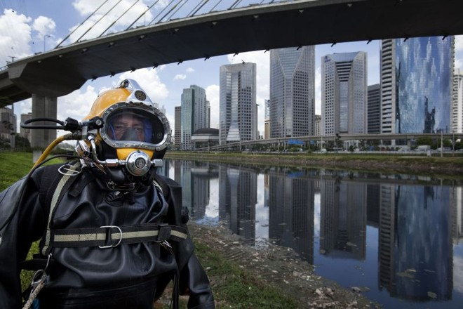
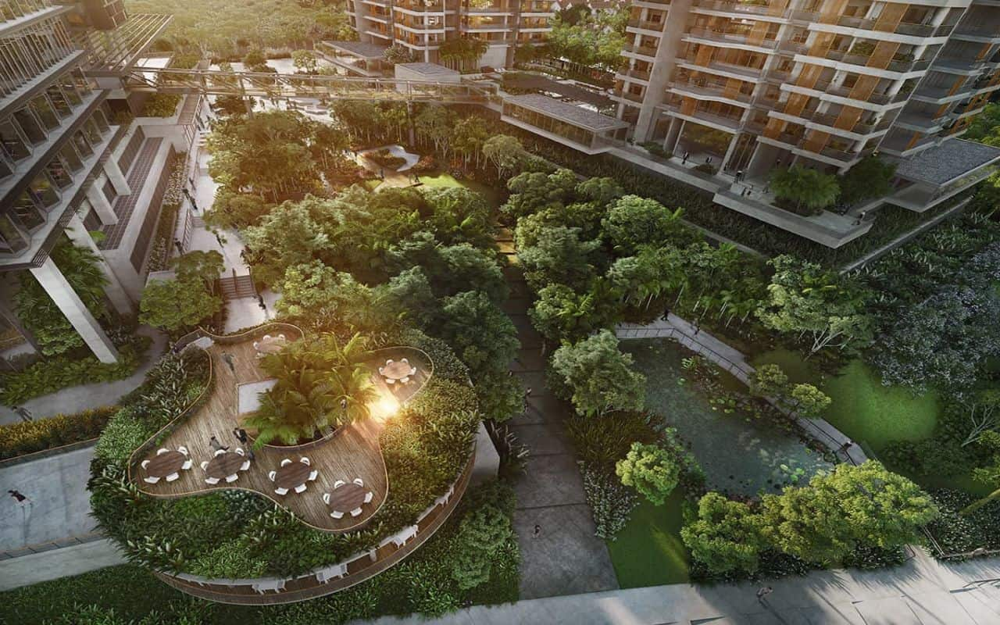
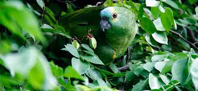
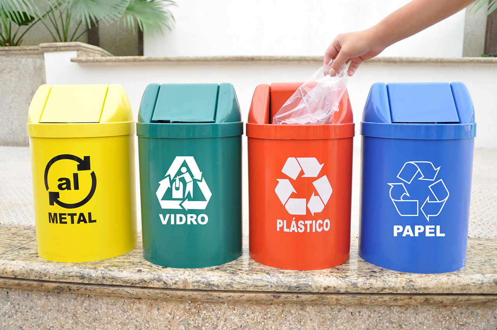

Plano de reflorestamento urbano é ampliado
Iniciativa prevê plantio de 2 milhões de árvores em áreas metropolitanas, priorizando corredores ecológicos.
Iniciativa prevê plantio de 2 milhões de árvores em áreas metropolitanas, priorizando corredores ecológicos.
Novos indicadores mostram melhora em bacias críticas do estado.

Ação comunitária mobiliza mais de 1.200 voluntários no fim de semana.

Piloto integra sensores para monitoramento de fauna e flora.

Espécies ameaçadas voltam a ser observadas em reservas.

Programas municipais ampliam cobertura e eficiência.
Acesso público a séries históricas de qualidade do ar.